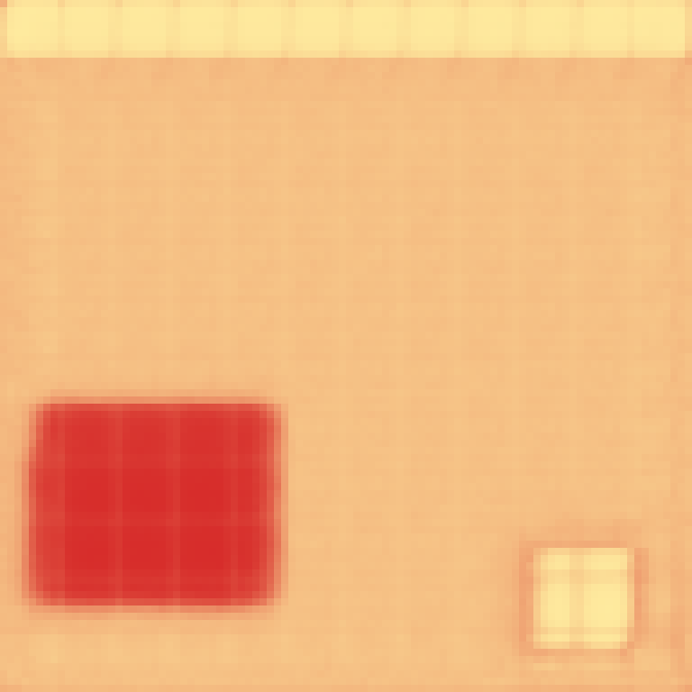

| Run ID | demo_lowland_paddy_20261117T090836Z |
|---|---|
| Scenario | demo_lowland_paddy |
| Status | OK |
| Device | cpu |
| Processing time | 35.0 s |
| Bands | 32 raw → 32 after selection (none) |
| Patches | 121 (train 84 / val 17 / test 20) |

| Class | Pixels | Area (ha) | Share | % |
|---|---|---|---|---|
| Waterlogged soil | 719 | 7.19 | 7.8% | |
| Healthy crop | 7,223 | 72.23 | 78.4% | |
| Stressed crop | 282 | 2.82 | 3.1% | |
| Open water | 224 | 2.24 | 2.4% | |
| Non-agricultural | 768 | 7.68 | 8.3% |
Total mapped area 92.16 ha at 10 m resolution. Waterlogged classes are waterlogged soil and stressed crop.
| Model | Accuracy | Precision | Recall | F1 | IoU |
|---|---|---|---|---|---|
| CNN (patch classification) | 0.8500 | 0.2778 | 0.3000 | 0.2882 | — |
| U-Net (pixel segmentation) | 0.9234 | 0.8777 | 0.8265 | 0.7868 | 0.7180 |